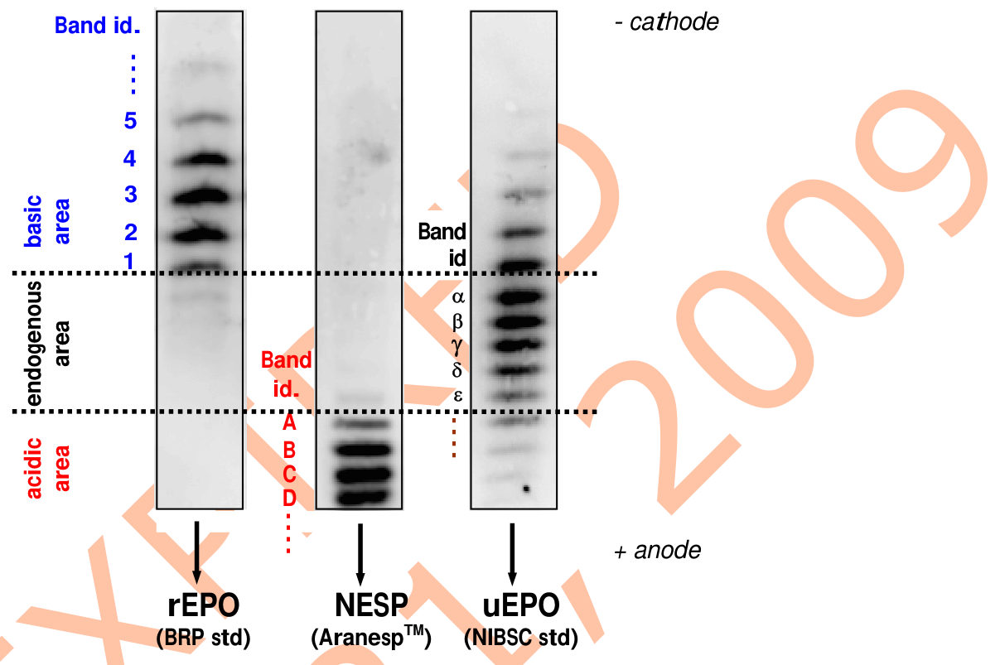

Technical Documents · TD2007EPO
Edition v2.0, 2007 (version 2.0) · effective 31 May 2007 · superseded
Retrieved on 25 November 2026 from https://www.wada-ama.org/sites/default/files/2022-01/WADA_TD2007EPO_%20Harmonization_Method_Identification_Recombinant_Erythropoietins_Analogues_EN.pdf
Editions: v1.0, 2027 (current) · v1.0, 2024 · v1.0, 2022 · v2.0, 2021 · v1.0, 2014 · v1.0, 2013 · v2.0, 2009 · v2.0, 2007 · v1.0, 2005
p. 1
HARMONIZATION OF THE METHOD FOR THE IDENTIFICATION OF EPOETIN ALFA AND BETA (rEPO) AND DARBEPOETIN ALFA (NESP) BY IEF-DOUBLE BLOTTING AND CHEMILUMINESCENT DETECTION.
The criteria presented herein have been established to ensure harmonization in the performance of the EPO urine test and the subsequent reporting of results across the Laboratories.
After IEF separation, a double blotting procedure is followed. In the first blot, proteins in the gel are transferred to a first PVDF membrane. After that, a monoclonal antibody (mAb)(clone AE7A5, recommended supplier: R&D Systems of Minneapolis, USA) is applied to recognise EPO. In a second blot, the interaction between EPO and mAb is disrupted at an acidic pH and the mAb is transferred to a second PVDF membrane.
All the Laboratories are required to apply these criteria in the routine performance of the urine EPO test. In this document, erythropoietin and its analogues are specified as follows: rEPO: recombinant erythropoietin, also referred to as epoietin (i.e. epoietin alfa and beta). uEPO: endogenous (secreted naturally by the athlete's own tissues) erythropoietin , found in the urine. NESP: the erythropoietin analogue, darbepoietin alfa. The original method was described by F. Lasne et al. in Analytical Biochemistry 311 (2002) 119-126. Description of the method The EPO urinary test must be performed according to the following method: 1) Sample preparation: Sample preparation consists of a partially selective pre-concentration technique based on centrifugal ultrafiltration and buffer washing. Preventing degradation of the EPO during this concentration process is essential. Additional purification step by immunoaffinity columns (IAC) is also an acceptable procedure as part of the sample preparation process. Note: Although other more selective concentration techniques may potentially be used, any change to Sample preparation may affect the isoform distribution and consequently shall require an appropriate validation by the Laboratory. 2) Isoelectric Focusing (IEF): Isoelectric focusing is performed in a pH range compatible with the isoelectric point (pI) of both the natural urinary EPO and its recombinant analogues (e.g. routinely in the pH range of 2 to 6). The pH gradient is constructed using carrier ampholytes and IEF is performed under denaturing conditions (approximately 7M urea). 3) Double blotting:
p. 2
Note: The method relies on the particular specificity of the monoclonal antibody with which it was developed (clone AE7A5). This antibody is considered a critical reagent and shall not be changed. Because the method relies on an isoelectric focusing separation prior to the antibody based detection, the use of a unique primary antibody is deemed scientifically acceptable. Consequently, clauses 5.2.4.3 (2nd sentence) and 5.2.4.3.1.3 of the WADA International Standard for Laboratories do not apply for this specific test.
- Chemiluminescent detection: The position of the mAb on the membrane is revealed by adding a sequence of reagents terminating in a peroxidase. This peroxidase generates light in the presence of the appropriate chemiluminescent substrate, allowing the generation of an image that maps the original position and quantity of EPO in the gel after IEF separation. Typically, this sequence of reagents is made up of: primary mouse anti-human EPO mAb - biotinylated anti-mouse secondary antibody - streptavidin- horseradish peroxidase complex - chemiluminescent substrate for horseradish peroxidase. Testing In compliance with the WADA International Standard for Laboratories (clause 5.2.4.3.1.1), a presumptive Adverse Analytical Finding in the Screening Procedure should be confirmed using a second aliquot taken from the original "A" Sample. Evaluation and Interpretation of Results Results need to fulfil the quality, identification and stability criteria described herein. Figure 1 shows an example of a test result with the definition of basic, endogenous and acidic areas. Bands of the reference substances are identified by numbers and letters.
p. 3

Figure 1. Image of three lanes obtained by the chemiluminescence acquisition system, and corresponding to the analysis of rEPO, NESP and uEPO. Basic and acidic areas are defined, as described, by the position of the bands corresponding to rEPO (Biological Reference Preparation, BRP, of the European Pharmacopeia) NESP (aranesp™, Amgen) and by exclusion, the endogenous area is defined in between. In the figure it is exemplified by uEPO (International Reference Preparation, IRP, from the National Institute for Biological Standards and Control, NIBSC, of UK). The bands in the basic, endogenous and acidic areas are identified by numbers and letters as shown. Additional bands than those represented and numbered can occur in the different areas, as illustrated by the dots (….). The evaluation of the image obtained is based on the consecutive application of : - acceptance criteria - identification criteria - stability criteria
p. 4
Acceptance criteria.
The acceptance criteria define the requisites that the image has to fulfil to allow the application of the identification criteria in order to ascertain the presence of rEPO or NESP.
rEPO
NESP
1.- Spots, smears, areas of excessive background or absent signal in a lane that significantly interferes with the application of the identification criteria shall invalidate the lane. 2.-Comparison to reference samples shall allow assignment of band numbers in the athlete's sample. Identification criteria. When the EPO urinary method was initially developed, the proposed method of detection quantified the relative amount of basic band areas. Several CAS cases have referred to the "80% basic bands" rule in making decisions. Further research and experience has indicated that the identification criteria below are more discriminating than the "80% basic bands" rule and therefore the "80% basic bands" criterion should no longer be used. The following identification criteria define the requisites that the image has to fulfil to consider that an adverse analytical finding corresponding to the presence of rEPO or NESP has occurred. 1.- in the basic area (as defined in Figure 1) there must be at least 3 acceptable, consecutive bands assigned as 1, 2, and 3 in the corresponding reference preparation. 2.- the 2 most intense bands measured by densitometry in the basic area must be consecutive and must be bands 1, 2 or 3. 3.- Each of the two most intense bands in the basic area must be more intense (approximately twice or more) than any band in the endogenous area, as measured by densitometry. 1.- in the acidic area (as defined in Figure 1) there must be at least 3 acceptable, consecutive bands assigned as B,C and D in the corresponding reference preparation. 2.- The most intense band measured by densitometry in the acidic area must be C or D. 3.- The most intense band (C or D) in the acidic area must be more intense (approximately twice or more)than any band in the endogenous area measured by densitometry.
Methyl red may be used in the electropherogram to facilitate positioning and numbering of bands on the gel.
p. 5
Stability Criteria
When, after applying the above identification criteria, a urine sample is suspected of an Adverse Analytical Finding for rEPO or NESP, the confirmation phase shall also establish the stability of the profile found. Since it cannot be discounted that some rare factors may interfere with the stability of a urine Sample and may affect the interpretation of an Adverse Analytical Finding for EPO, a stability test shall be performed before reporting an Adverse Analytical Finding for EPO in urine.
While it is recognized that other specific reagents may be developed and validated by the Laboratory, an acceptable procedure for the stability test is as follows: Reagents : Pepstatin A: 1mg/mL in methanol CompleteTM (Roche): 1 tablet /2 mL of water Microcon® YM-30 (Millipore), MWCO, 30,000 Da 50 mM sodium acetate buffer pH~5 Tween-80 BRP and NESP Method : Centrifuge 0.6 mL of urine 10 min, 2700 RCF, 20°C and put 0.5 mL of supernatant in a test tube Add 20 µL of Pepstatin A and 5 µL of CompleteTM Concentrate to approximately 30 µL using the Microcon® Add 200 µL of acetate buffer into the sample reservoir and mix by vortexing before the invert recovery spin Adjust the volume of the recovered sample to 0.5 mL with acetate buffer Add 20 µL of Pepstatin A and 5 µL of CompleteTM
Incubate 15± 2 min at room temperature Add a mixture of BRP and NESP to a final concentration 1.5 x conc. used in references lanes of IEF Incubate overnight at 37°C Take 20 µL. Heat 80°C for 3 min Add Tween-80 Apply to IEF gel The stability criteria are: 1. The method described above does not result in a substantial shift in the position of the bands or in the appearance of new band(s) in the stability test lane compared to the reference standard lane(s). 2. The distribution of the most intense bands in the results of A screen, A confirmation (and B confirmation when available) is similar.
p. 6
Documentation and Reporting
The following information is considered acceptable as "screening and confirmation test data" in compliance with the WADA International Standard for Laboratories-Technical Document TD2003LDOC, for this particular method:
Opinions:
Screening Assay Data: - Image acquired from the detection system, corresponding to the lanes representing:
o Sample (screening aliquot) o Positive control sample or standard of the suspected or equivalent
substance (i.e rEPO or NESP) o Negative control sample or standard of urinary EPO (uEPO). - Processed images, such as densitometry profiles and/or contoured renditions of the
signal density in the original image. These should show annotations demonstrating the application of the criteria to the isoform distribution of the Sample. - Description of the result based upon application of all the criteria
described in this Technical Document. Confirmation Assay Data: - Image acquired from the detection system, corresponding to the lanes representing:
o Sample (confirmation aliquot) o stability test o Positive control sample o Standard of the suspected or equivalent substance (i.e rEPO or NESP) o Negative control sample and standard of urinary EPO (uEPO). - Processed images, such as densitometry profiles and/or contoured renditions of the
signal density in the original image. These should show annotations demonstrating the application of the criteria to the isoform distribution of the Sample. - Description of the result based upon the application of the different criteria described in this Technical Document. Any comment(s) from the Laboratory deemed necessary in support of the analytical finding.
Retrieved on 25 November 2026 from https://www.wada-ama.org/sites/default/files/2022-01/WADA_TD2007EPO_%20Harmonization_Method_Identification_Recombinant_Erythropoietins_Analogues_EN.pdf